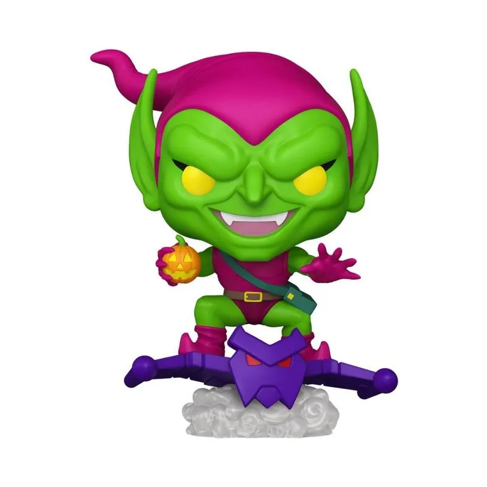
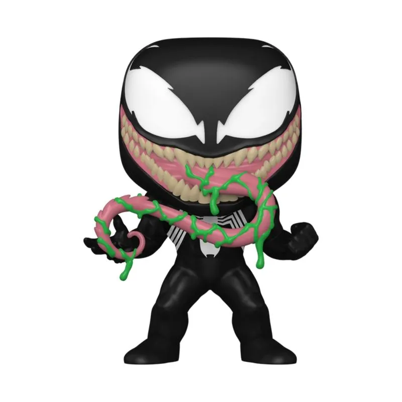
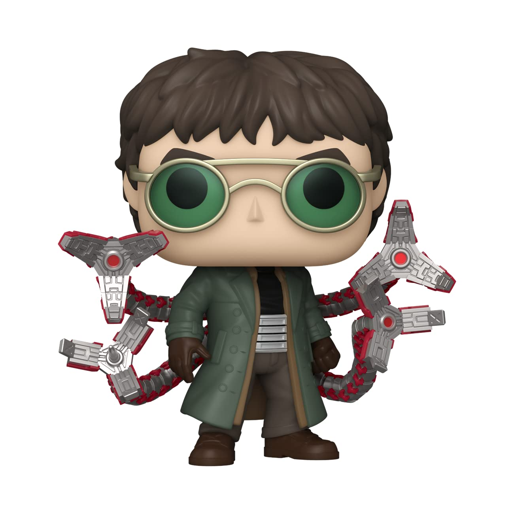
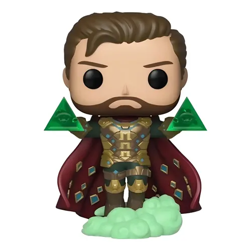

Duende Verde
Norman Osborn usa seu planador avançado e bombas de abóbora. É o inimigo mais cruel do Aranha, movido por pura insanidade.

Norman Osborn usa seu planador avançado e bombas de abóbora. É o inimigo mais cruel do Aranha, movido por pura insanidade.

Um simbionte alienígena que se uniu a Eddie Brock. Possui todas as habilidades do Homem-Aranha, mas com força brutal.

Otto Octavius é um gênio cientista comandado por quatro tentáculos mecânicos indestrutíveis e extremamente rápidos.

Quentin Beck usa tecnologia de ponta, hologramas e gases alucinógenos para criar ilusões perfeitas e enganar o herói.
Viu algum desses vilões agindo? Avise o Clarim Diário imediatamente!